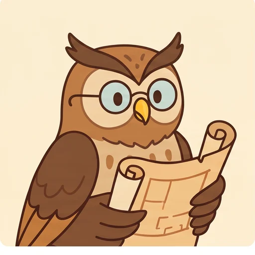
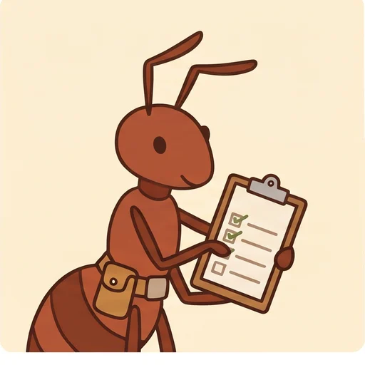
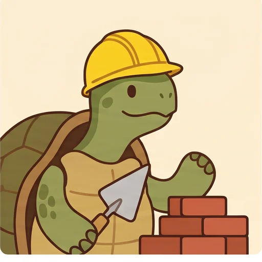
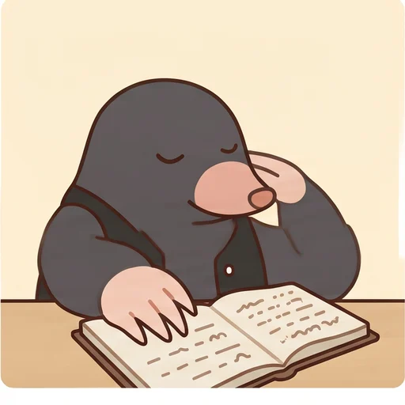
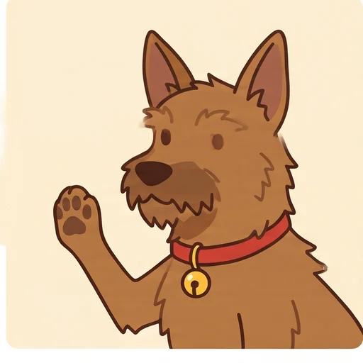

The build fleet
A crew of five that takes one card from plan to finished code, checks it three different ways, and then waits for you. Nothing goes into the main code until you say yes.
Planned: milestone M34, not built yetMeet the crew
Each worker is an animal from Aesop's Fables. The animal tells you its job.

Orla the Owl
The Lead
Plans the work, sends out the others, checks what they say against the real code, runs the tests and writes the report.
Never writes the code herself, and never merges.

Ada the Ant
The gate check
Goes down a checklist before anyone starts: the card says when it's done, the code is tidy, no other run is going.
A plain script, not an AI. Costs nothing.

Tobin the Tortoise
The Builder
The only one who writes code, slow and steady, in his own copy of the project, with a test for each thing the card asks for.
Never touches passwords or keys, or anything outside the card.

Milo the Mole
The blind reviewer
Sees only the changes and what the card asked for, and feels along every line for a weak spot. He's a different AI model, so he doesn't share Tobin's blind spots.
Can't open other files or run anything.

Rufus the Watchdog
The security lister
Called only when a quick search of the changes finds logins, keys or passwords. Then he barks at every such line and lists them for you to read.
Never says "it's safe". You read those lines yourself.
One run, step by step
For a card that changes logic or data, or anything risky. Claude marks those when planning, and you can mark any card. Cards that are only about looks build as they do today, because your eye is their check. Every step writes a short file, so you can see what happened.
Ada checks the gate
Is the card ready? If any box isn't ticked, the run stops here. doctor.md
Orla writes the plan
She reads the card and the code around it. If there's a real choice to make, it becomes a question for you on the board and the run waits. plan.md
Tobin builds it
In his own copy of the code, on a branch named after the card, with a test for each "done when". build.md
Milo reviews it blind
He sees only the changes and lists the problems he finds. review.md
Orla checks each finding
Each of Milo's points is checked against the real code: upheld, rejected or can't tell. verdicts.md
Upheld problems go back to Tobin to fix, at most twice. After that, Orla stops and asks you.
Rufus lists the risky lines
Only if a quick search finds changes near logins, keys or passwords: each one with its file and line. security-list.md
Orla tests and writes it up
Runs the project's checks, takes phone pictures for anything on screen, writes what was and wasn't tested, and leaves the work waiting on its own branch. report.md
- You
You decide
The card waits in Needs your look. Read the report and Rufus's list, then say yes and it's merged into the main code, send it back with a note, or drop it.
Where you come in
Before
Write the card with a clear "done when". No "done when", no run. Answer any design questions up front.
During
Nothing, unless Orla hits a real choice. Then it shows up in Needs your decision, as a multiple-choice question.
After
- Read report.md
- Read Rufus's lines
- Yes, send back or drop
While you're away
Say you're off to bed and away mode answers its questions with you first, then builds. Several helpers build at once, as today. When one of them gets a fleet card, the crew runs it on its own branch.
In the morning the fleet cards wait in Needs your look with everything else, each with its report. Your yes merges each one.
House rules
- Only you merge. The crew never moves a card to Done.
- Only Orla merges, and only after your yes. The helpers can't push.
- No helper can read your passwords or keys. A guard blocks it, and the first run proves the guard works.
- Spotted something else? It becomes an Ideas card, never a sneaky extra fix.
- It knows when to stop: at 98% of your usage, after a set number of turns per step, and after two rounds of fixes.
- Looks skip it. Cards that are only about how something looks build as today; the crew costs more than it would catch there.